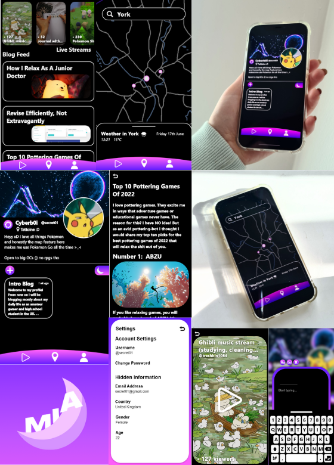

My Introverted App (M.I.A) (2022)
An app to socialise, read articles and check out the busiest events in your area... except you won't go to them, you'll avoid them. Scored a high second (68%).
This UI Design is an alternate take on social media, in which profiles are anonymous, posting is random and the content is non-marketed. Furthermore, the map feature shows busy events, locations or gatherings in your area, in case you wish to avoid people and noise.
While this was my first time designing an app, I found meaning in the functionality rather than the specific design and aesthetic. While I could have spent endless time on making it look pretty, I wanted to use the alotted assesment period to include every function of the app to convey its concept effectively.
If this app existed, I definitely would use it.
Skills Used
- User Interface Design, Interaction Design & Graphic Design using Adobe Xd
- Product Marketing & Photography
- Critical Design